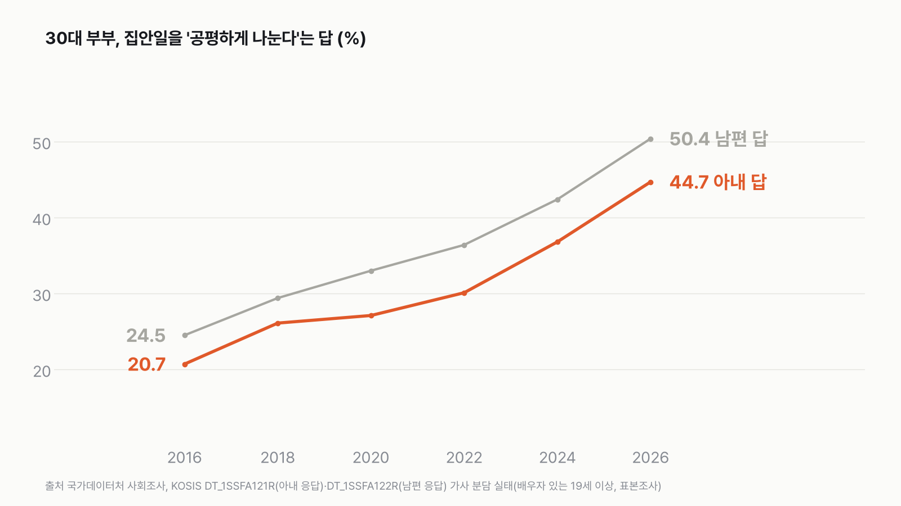
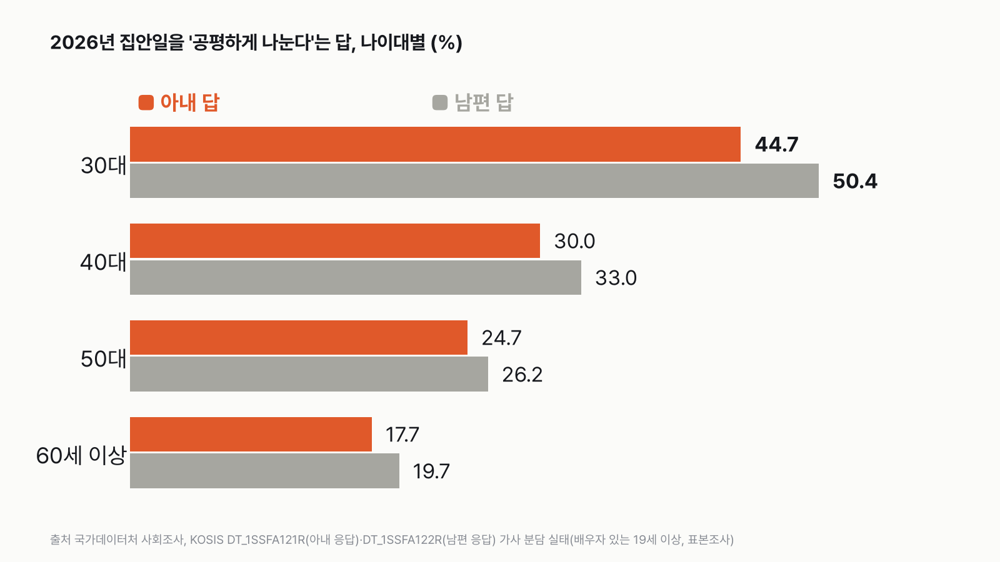

집안일 반반 나눈다는 30대 부부, 10년 새 두 배
30대 부부 10집에 물으면 아내 답으로는 4~5집, 남편 답으로는 5집이 집안일을 반반 나눈다고 해요. 10년 전엔 2집 남짓이었어요.

3줄 요약
- 2026년 사회조사에서 집안일을 부부가 '공평하게 나눈다'는 30대 아내는 44.7%, 30대 남편은 50.4%예요.
- 2016년엔 아내 20.7%, 남편 24.5%였어요. 10년 새 둘 다 두 배 넘게 늘었어요.
- 60세 이상은 아내 17.7%, 남편 19.7%예요. 나이대가 높을수록 '반반'이라는 답이 적어요.
| 집안일을 공평하게 나눈다 | 2016년 | 2026년 | 10년 새 |
|---|---|---|---|
| 30대 아내 답 | 20.7% | 44.7% | +24.0%포인트 |
| 30대 남편 답 | 24.5% | 50.4% | +25.9%포인트 |
| 전체 아내 답 | 17.7% | 26.7% | +9.0%포인트 |
| 전체 남편 답 | 17.8% | 28.4% | +10.6%포인트 |
30대는 조사 때마다 늘었어요
30대 아내 답은 2016년 20.7% → 2018년 26.1% → 2020년 27.1% → 2022년 30.1% → 2024년 36.8% → 2026년 44.7%예요. 2년마다 한 번도 줄지 않았어요. 남편 답도 24.5%에서 50.4%까지 매번 늘었어요.
그래도 '아내가 주로'가 절반 가까이
2026년 30대 아내의 49.9%는 '아내가 주로 한다'고 답했어요. 30대 남편도 45.4%가 '아내가 주로'라고 했어요. '남편이 주로'는 아내 답 5.4%, 남편 답 4.2%예요.
남편 답이 조금 더 높아요
같은 30대인데 남편 답(50.4%)이 아내 답(44.7%)보다 5.7%포인트 높아요. 아내와 남편은 각자 따로 답한 사람들이라, 같은 부부의 답을 맞춰 본 건 아니에요.

나이대가 높을수록 적어요
| 2026년 | 아내 답 | 남편 답 |
|---|---|---|
| 30대 | 44.7% | 50.4% |
| 40대 | 30.0% | 33.0% |
| 50대 | 24.7% | 26.2% |
| 60세 이상 | 17.7% | 19.7% |
30대와 60세 이상은 아내 답으로 27.0%포인트 차이 나요. 맞벌이 부부 전체로 보면 아내 32.4%, 남편 33.6%가 '반반'이라고 답했어요. 맞벌이가 아닌 부부(아내 22.2%, 남편 24.0%)보다 많아요.
숫자를 다시 보며
'반반'이라는 답은 10년 새 30대에서 두 배 넘게 늘었어요. 그래도 30대 부부 절반 가까이는 아직 '아내가 주로' 한다고 답했어요. 이 숫자는 답한 분담이고, 하루에 몇 분을 쓰는지는 생활시간조사로 따로 봐야 해요. 여러분 집은 반반인가요?
이 숫자는 어디서 왔나요
출처
기준일 2026년 사회조사(2026년 11월 18일 공표) 값이에요. data_collect가 2026년 11월 19일에 받은 표예요.
| 데이터 | 출처 | 쓰임 |
|---|---|---|
| 사회조사 2016~2026 가사 분담 실태(아내 응답·남편 응답) | 국가데이터처, KOSIS DT_1SSFA121R·DT_1SSFA122R | 나이대·맞벌이 여부별 '공평하게 분담'·'아내가 주로'·'남편이 주로' 비율 |
어떻게 셌나요
- 자료: 국가데이터처 사회조사, KOSIS DT_1SSFA121R(아내 응답)·DT_1SSFA122R(남편 응답) '가사 분담 실태'. 배우자가 있는 19세 이상이 답했어요. 가족 부문은 2년마다 물어요.
- '반반': 답 중 '부부가 공평하게 분담'만 셌어요. '아내가 주로'와 '남편이 주로'는 각각 그쪽으로 기운 답을 합친 값이에요. 세 값을 더하면 100%예요.
- 20대는 뺐어요: 배우자가 있는 20대는 표본이 작아 해마다 값이 크게 흔들려요.
- 10집 중 몇 집: 비율 ÷ 10을 반올림했어요. 44.7%는 4.5집이라 '4~5집', 50.4%는 5.0집이라 '5집'으로 적었어요.
한계 5가지
이 데이터로 말할 수 없는 것
- 인식 설문이에요. 실제 집안일 시간이나 횟수와는 다른 숫자예요.
- 표본조사라 오차가 있어요. 나이대별 값은 전체보다 오차가 커요.
- 아내 답과 남편 답은 서로 다른 사람들의 답이에요. 같은 부부끼리 맞춘 값이 아니에요.
- 왜 늘었는지, 왜 나이대마다 다른지는 이 자료로 알 수 없어요.
- 자녀 수, 사는 곳은 나누지 않았어요.
새 글 나오면 받아 보기
피드 리더 앱에 이 사이트 주소를 한 번 넣어 두면, 새 글이 올라올 때 앱에 떠요. 가입이나 메일 주소는 필요 없어요.
받는 법 보기
- 피드 리더 앱을 하나 골라요. 새 글을 모아 보여 주는 앱이에요. 예를 들면 Feedly나 Inoreader가 있어요. 둘 다 무료고 웹·휴대폰에서 써요.
- 앱에서 '구독 추가'(+)를 누르고 아래 주소를 붙여 넣어요.
- 끝이에요. 새 글이 올라오면 앱 목록에 떠요.
https://protofu.github.io/opendata-insight/feed.xmlFeedly를 쓴다면 여기를 눌러 바로 추가할 수도 있어요.